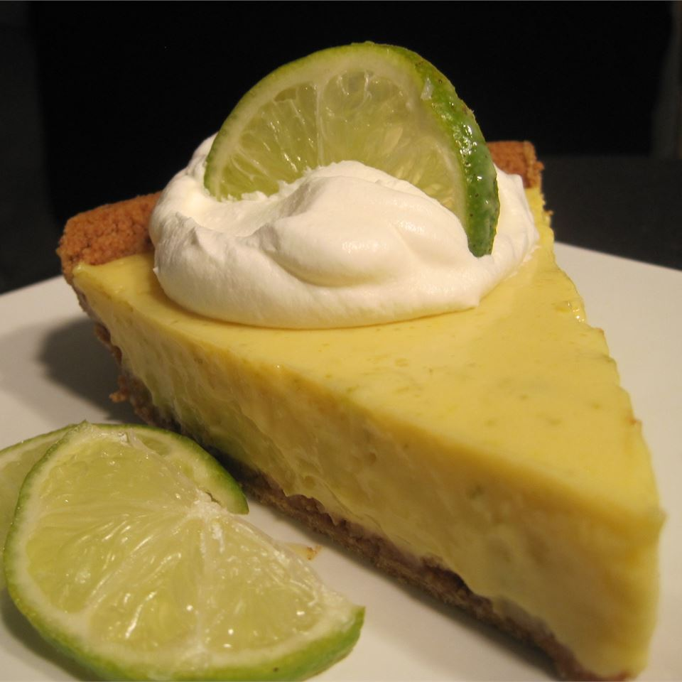

Key Lime Pie

Description
This is the 1999 American Pie Council 's National Pie Championship's
first place winner in the Quick and Easy Category. Garnish each piece with
a slice of lime and a dollop of whipped cream or whipped topping if you like.
Ingredients
- 5 egg yolks, beaten
- 1 (14 ounce) can sweetened condensed milk
- ½ cup key lime juice
- 1 (9 inch) prepared graham cracker crust
Steps
- Preheat oven to 375 degrees F (190 degrees C).
- Combine the egg yolks, sweetened condensed milk and lime juice.
Mix well. Pour into unbaked graham cracker shell.
- Bake in preheated oven for 15 minutes. Allow to cool.
Top with whipped topping and garnish with lime slices if desired.